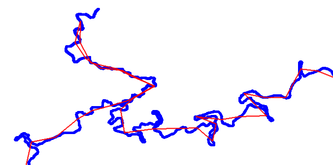
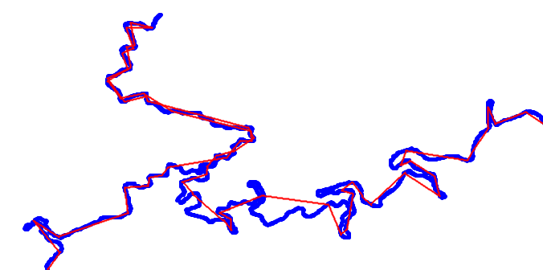
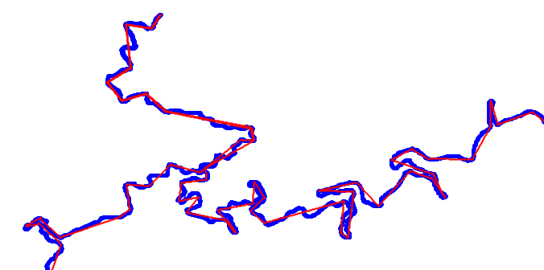

トラック間引きアルゴリズムの比較
GPSトラックやルートの間引きにおいて、自作のソフトウェアで採用しているのはRamor-Douglas-Peuckerアルゴリズム。
一方、カシミール3Dや轍 wadachi、GPSBabelといった他のソフトウェアは異なるアルゴリズムを採用しており、ルートデータを間引いた際にどのような違いが生じるのか、間引き結果と処理時間を比較した。
比較するソフトウェアと採用アルゴリズム
カシミール3D
昔から使われている、老舗ソフトウェアのカシミール3D。
間引きアルゴリズムはVer8.9.4(2011/11/15)に実装されていて(KASHMIR / 最新情報)、
時間優先と距離優先を選べます。
時間優先にした場合には、時間間隔が短いところ優先的に間引いていきます。
距離優先にした場合には、距離間隔が短いところ優先的に間引いていきます。
という説明がされている。
ルートデータには時間データが含まれないことが多いので、今回は「距離優先」を指定して比較する。
想像するに、GPSロガーは「一定距離以上進んだら記録する」という設定が可能な機種があり、そのような設定にした時の挙動に合わせることを主眼にしているのではないだろうか。
また、制約として1トラックの最大ポイント数が65,535点というものがある点には注意。
今回使用したバージョンは9.3.9。
轍 wadachi
カシミール3Dよりは新しいものの、こちらも自転車界隈で古くから有名なソフトウェアの轍 Wadachi。
トラックの間引きアルゴリズムについては以下のページに記述がある。
トラックログを間引きしてポイント数を減らす - 轍 Wadachi
轍の間引き機能は単純にポイントを間引くのではなく、できるだけ元のトラック形状を維持するように高度な最適化を行っています。
そのため間引きを行っても視覚的にはほとんど劣化することなく、大幅にポイント数を減らすことが可能になります。
アルゴリズムの詳細は分からないものの、轍 wadachiで特徴的なのは、間引き設定画面で「目標ポイント数」を設定できるが、ぴったりそのポイント数になるわけでなく、多くの場合で目標ポイント数より少なくなる点。
このことから、轍 wadachiが採用しているアルゴリズムでは何らかの閾値を用いるもの(Reumann-WitkamやLangのアルゴリズムなどの系統)で目標ポイント数を超えないような閾値を探索している可能性や、ヒューリスティックなアルゴリズムを実装している可能性が考えられる。
今回使用したバージョンは4.25。
GPSBabel
マルチプラットフォームで、GUIの他にコマンドラインツールもあるGPSBabel。
フィルタとしてsimplifyが実装されていて、その内容はGPSBabel development:Simplify routes (simplify)に記述されている。
crosstrack(デフォルト)、length、relativeの3種類のメソッドが設定できる。
今回はデフォルトのcrosstrackを使って比較するが、crosstrackは前後の隣接するポイントが作る線分との距離が短い順に削除するアルゴリズムとなっている。
ソースコードがGitHubに公開されているので実装を確かめることができ、該当するソースコードはgpsbabel/smplrout.ccである。
今回使用したバージョンは1.8.0。
その他のアルゴリズム
線分の単純化に関してはやはりGISソフトウェアに一日の長があり、例えばArcGISではDouglas-Peucker以外に3種類(Wang-Müller、Zhou-Jones、Visvalingam-Whyatt)のメソッドを実装している(ラインの単純化 (Simplify Line) (カートグラフィ)—ArcGIS Pro | ドキュメント)。
ページ中の4種類のアルゴリズムの比較図を見ると、Visvalingam-Whyattもかなり良いアルゴリズムに見える。
ただ、折り返し部分が無駄なスパイクと判定されて消されてしまうため、ルートデータの単純化アルゴリズムには向いていないと考えられる。
{kind=link}
ルートデータの間引き結果 (78252点 → 2000点)
各ソフトウェアでトラックを間引いた結果を視覚的に比較する。
今回は検証のためにRWGPSで提供されたSR600剣のコースデータを使用した(2023/04/28時点でポイント数は78,252であった)。
カシミール3Dは最大65,535ポイントの制限があるため、Douglas-Peucker(GPXトラックログを間引く・簡略化)で予め65,535ポイントに削減したデータを読み込ませた。
各ソフトウェアが採用するアルゴリズムの特徴を強調するために削減率を大きく取り、ポイント数を2,000に削減した。
九十九折の道が連続して、その先に折り返し部があるPC4付近の結果を示す。
(いずれも青太線がオリジナル、赤線が間引き後)
- カシミール3D
 - 轍 wadachi
 - GPSBabel
- Douglas-Peucker(自作) (実装はGPXトラックログを間引く・簡略化)

また、間引き処理にかかった時間をそれぞれ計測した結果と、間引き後のトラックの距離を比較した結果(間引き前は610.201km)は下表となった。
| ソフトウェア | GPX読み込み時間 | 間引き出力時間 | 出力ポイント数 | 間引き後距離 |
|---|---|---|---|---|
| カシミール3D | < 1秒 | 23分44秒 | 2,000 | 503.478 km |
| 轍 wadachi | 1分35秒 | 10秒 | 1,929 | 531.665 km |
| GPSBabel | - | 40秒 | 2,000 | 579.514 km |
| Douglas-Peucker(自作) | < 1秒 | < 1秒 | 2,000 | 578.723 km |
※ 計測環境は仮想マシン上のWindows 10で、自作Douglas-PeuckerについてはブラウザにEdgeを用いた。CPUはCore i7-7700HQ。
まとめ
- カシミール3D
- ルート形状があまり保存されず、サイコンに入れたり、地図に表示する用途にはあまり向かない。
- ただし、アルゴリズムの主目的が「ルートの形状を保存する」ではないと思われるので、このことは妥当と思われる。1
- 出力に非常に時間がかかる。
- 1トラック毎のポイント数制限(65,535点)に引っかかる可能性がある点に注意。
- ルート形状があまり保存されず、サイコンに入れたり、地図に表示する用途にはあまり向かない。
- 轍 wadachi
- こちらもルート形状はあまり保存されないため、サイコンに入れる用途にはあまり適さない。
- この結果からルートデータの間引きより、ログデータの間引きに主眼が置かれたアルゴリズムになっている可能性がある。1
- GPXファイルの読み込みに少し時間がかかる。
- こちらもルート形状はあまり保存されないため、サイコンに入れる用途にはあまり適さない。
- GPSBabel
- crosstrackアルゴリズムは結構優秀で、人によってはDouglas-Peuckerよりもこちらを好むかもしれない。
- 処理に少し時間がかかることと、CLIがベースでGUIはそのラッパーという作りになっていて少し取っつきにくいのが難点か。
更新履歴
- May 14 2023: 8種類の間引きアルゴリズムを比較できるデモページを作成: https://330k.github.io/line_simplify_demo/gpx_visual_simplify.html
- May 20 2023: メルカトル図法への投影式に誤りがあったため、Douglas-Peuckerの結果画像を修正。
-
今回は検証データにルートデータを使用したが、ルートデータかログデータかでデータの性質と間引きアルゴリズムの目的が大きく異なる。
ルートデータの場合は時刻情報を持っているとは限らず、基本的に地図と一致した緯度経度が与えられる。 また、今回検証したように「地図に表示したとき、道を間違えない程度にルートを単純化する」ことが大きな目的となる。
一方でログデータの場合は時刻情報を必ず持っており、GPS機器の測量誤差が含まれる、というのが大きな特徴である。 地図に表示する以外にも、GPSの誤差を平準化する、停止を検知して移動速度や休憩時間を解析するための前処理をする、といった目的が考えられる。
目的が異なれば適するアルゴリズムも変わってくる点、各ソフトウェアの作者は目的に沿ったアルゴリズムを選択している点には留意されたい。 ↩︎ ↩︎